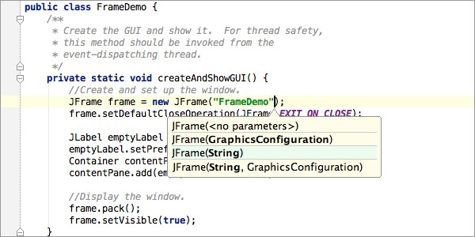
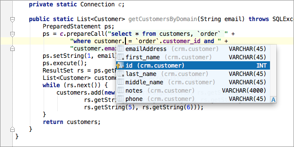

The first one and probably the most impressive feature I would like to highlight is instant completion. Unlike other IDEs, IntelliJ IDEA provides it everywhere, not only when you are trying to access a member of a class. Smart Completion, it filters suggestion list and shows only classes, variables, fields and methods of they type, expected in the context. IntelliJ IDEA analyses data flow to guess the type of a variable in runtime and provide a completion, based on this type, adding class casts automatically. 
IntelliJ IDEA shows parameter info for every overloaded method or constructor, and highlight the best match for the parameters already typed. This helps you choosing between overloaded options and compare your input with expectation.
Language injection is a feature of IntelliJ IDEA that brings advanced code assistance for expressions within String literals in Java code. This expression may contain SQL, JPQL, XPath expression, HTML, CSS, JavaScript fragment or any other language. 
JRebel is a productivity tool that allows developers to reload code changes instantly. It skips the rebuild, restart, and redeploy cycle common in Java development. JRebel enables developers to get more done in the same amount of time and stay in the flow while coding. JRebel supports a majority of real-world enterprise java stacks and is easy to install into existing development environments. The JRebel plugin for IntelliJ IDEA includes the JRebel agent and helps you to automatically generate the JRebel configuration. It enables JRebel for applications and servers with a single click and improves the debugging support in the IDE.
It allows you to view your changes in an actual browser window instantly without a page refresh, reload corresponding browser pages (related to opened file in IDE) and highlight corresponding element. Currently only Google Chrome is supported (extensions for Firefox & Safari are still postponed). If you edit your PHP file or Smarty template, it is so boring to switch to the browser and reload tab manually, isn’t it? Forget about it! Just View -> Reload in Browser. Want to see your change instantly? No problem. And yes, SASS/CoffeeScript are supported (external watching compiler is still needed). CSS and JavaScript (Kotlin, CoffeeScript and any other compilable to JS) will be hot-swapped without page refresh (of course, hot-swapped JavaScript will be effective only if it used in cycle or event-driven).
IdeaVim is a Vim emulation plug-in for IDEs based on the IntelliJ platform. Use the IDE’s plugin manager to install the latest version of the plugin. Start the IDE normally and enable the Vim emulation using “Tools | Vim Emulator” menu item. At this point you must use Vim keystrokes in all editors. If you wish to disable the plugin, select the “Tools | Vim Emulator” menu so it is unchecked. At this point IDE will work with its regular keyboard shortcuts. Keyboard shortcut conflicts between the Vim emulation and the IDE can be resolved via “File | Settings | Vim Emulation”, “File | Settings | Keymap” and key mapping commands in your ~/.ideavimrc file.
Find more awesome plug ins at https://examples.javacodegeeks.com/desktop-java/ide/intellij-idea/top-10-intellij-idea-plugins/